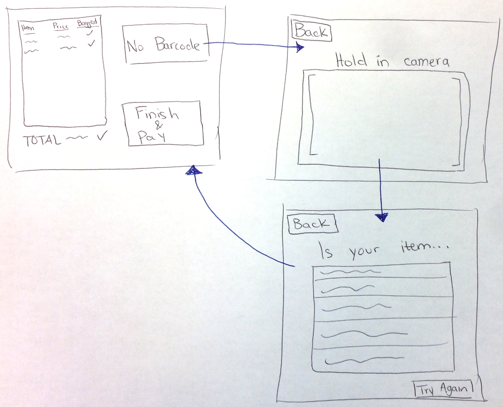
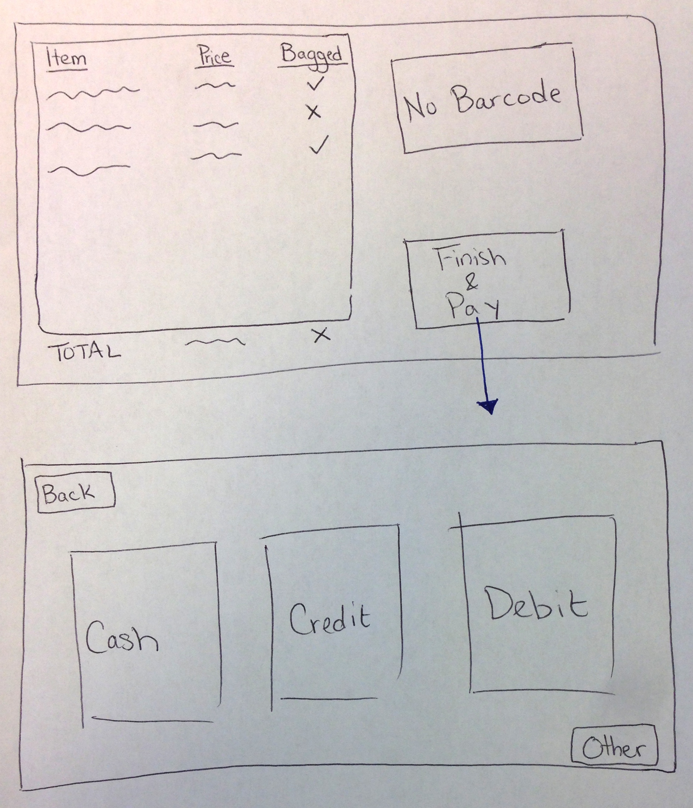
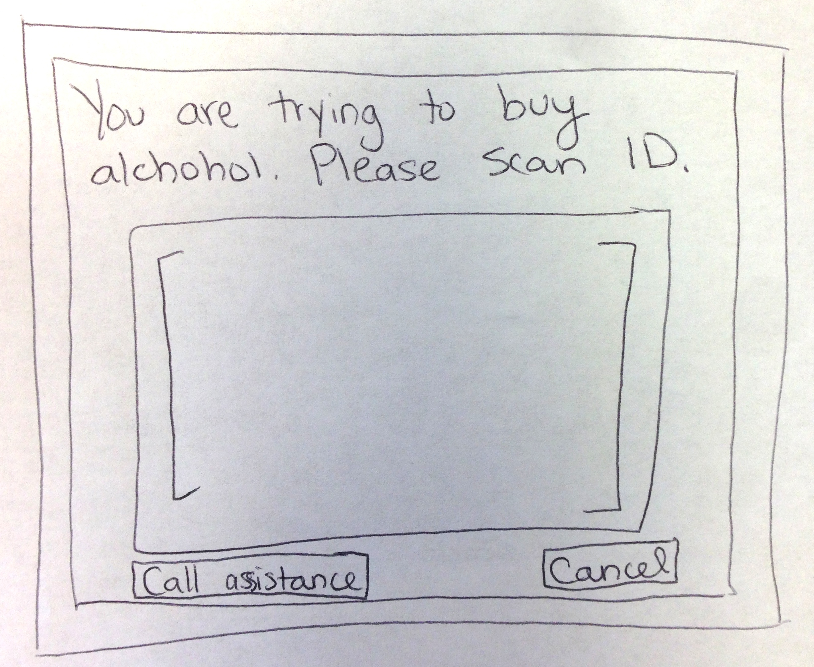

Project Brief: Redesign of Self Checkout System
Problem
Self-checkout is a process which frustrates many shoppers. It can often take a long time due to navigating the system, finding all the barcodes, manually selecting produce, and self-bagging. Many times users will find themselves unsure of how to proceed, adding to the time taken and to their frustration. When a user fails to perform each step perfectly, the system requires a shift manager to fix the problem, which is embarrassing for the user and a potential waste of the employee’s time.
Learning Goals
When writing our team contract, there were a few common themes our individual learning goals fit into. We all would like to gain more experience in how the UOCD concepts and processes can be applied to design interfaces and software. This can be achieved by being open to feedback from the instructors regarding our design process. Additionally having a positive team experience was a priority for the group. As long as we maintain communication within the group and each member handles themselves responsibly, we should be able to have a positive HFID experience.
Stakeholders
We foresee two groups of stakeholders: chain stores with a self-checkout process, and their shoppers.
With our redesign, shoppers should get through the process faster and with less stress, and will be less prone to making mistakes. We will have an easy time finding shoppers, as they can often be found at the self-checkout counter.
Stores should see a higher customer satisfaction, which will improve their customer retention rate. They will also be able to check out customers at a higher rate. Employees will not need to spend so much of their time providing assistance. We will need to set up interviews with managers and employees ahead of time, which will involve a combination of phone calls and approaching employees.
Naïve design idea
The first core problem we identified with self checkout is that some screens have too many options - particularly the product selection and payment options. We resolved this by having image recognition software for un-barcoded items that will then suggest a few item. Additionally, the payment option screen will only have cash, credit, and debit as large buttons since we propose that is the 90% of how purchases proceed.
 
The other core problem is that the user is unable to resolve any issues during checkout. For example, purchasing medicine and alcohol require an ID check. These situations must be taken into account without an employee having to assist.

Research to be done
We need to become familiar with all the screens involved in a typical self-checkout machine. This information can be obtained through some online research and by going to a variety of stores and documenting how the process works. While we are doing this, we also will document how the self-checkout process differs between stores. Finally, we will need to interact with users to learn about what problems they have with current systems and why they use self-checkout in the first place.